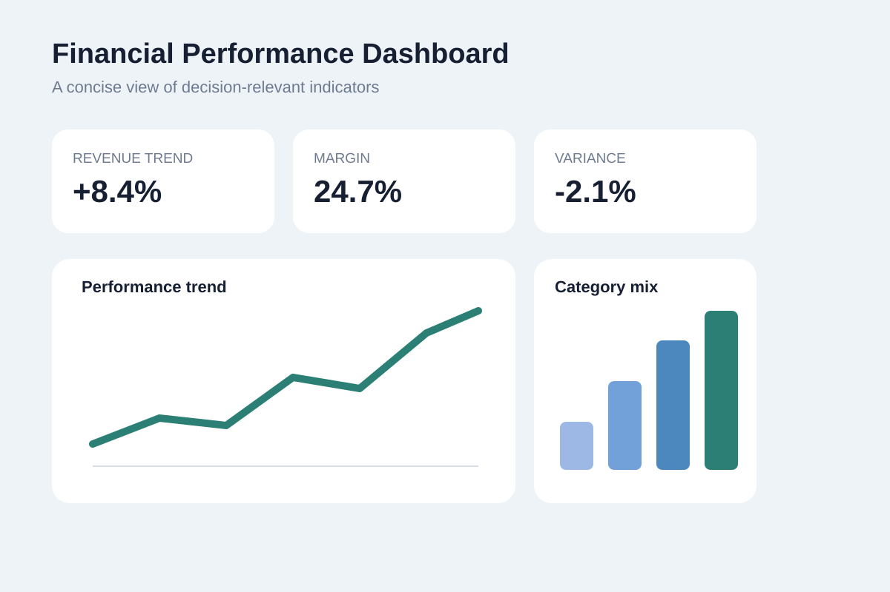
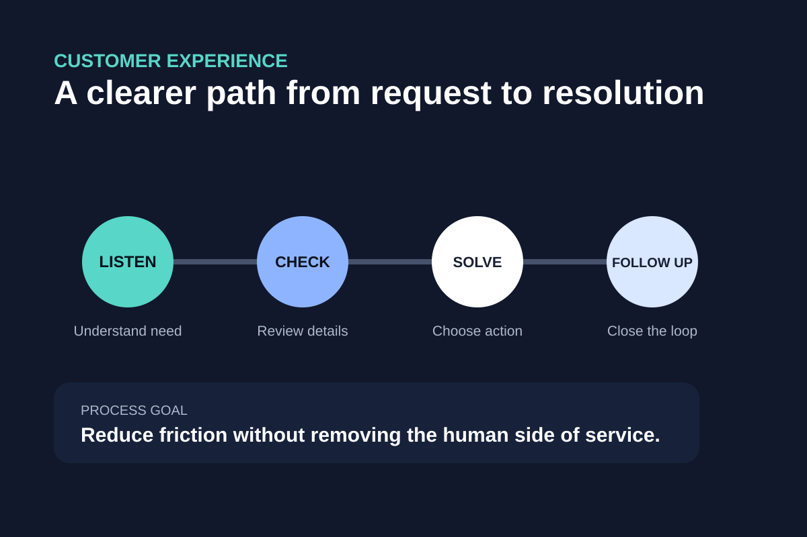

Finance × Technology × Customer Experience
I turn business questions into clearer decisions.
I am Yash Dixit, a BBA Finance student building practical skills in data transformation, web development, business analysis, and technology-enabled problem solving.
FinanceBusiness foundation
DataTransformation mindset
PeopleCustomer-first experience
About me
Business thinking with a growing technical toolkit.
I am a Bachelor of Business Administration student specializing in Finance at the University of Lethbridge. My academic work has strengthened the way I think about financial decisions, business processes, data, and how technology can improve the way organizations operate.
Alongside my studies, I have built customer-facing experience in banking. That work has taught me how important clear communication, accuracy, trust, and practical problem solving are in a professional environment. I am especially interested in the point where finance meets digital transformation: using better information, simpler workflows, and thoughtful automation to support both employees and customers.
My goal is to keep developing a combination of financial knowledge, analytical thinking, and technical confidence that can translate into roles in banking, analytics, digital transformation, and other business-focused areas of technology.
Skills
A practical mix of business, data, and digital skills.
Data & Business Tools
Professional Strengths
Selected work
Projects that connect learning to real business questions.
These work samples show how I approach problems: understand the need, organize the information, design a practical solution, and explain the value clearly.

Data Transformation & Automation Concept
Developed a business-focused concept for improving how information moves from disconnected inputs to usable insights. The project examines data preparation, workflow efficiency, automation opportunities, and the organizational challenges that can affect adoption.
My role: Process analysis, solution design, business recommendations, and presentation.
ExcelProcess MappingAutomationBusiness Analysis

Financial Performance Dashboard
Designed a dashboard concept that organizes financial information into a concise management view. The layout emphasizes trends, key performance indicators, and decision-relevant comparisons instead of overwhelming the reader with raw numbers.
My role: KPI selection, information design, financial interpretation, and visual layout.
ExcelFinancial AnalysisVisualizationKPI Design

Customer Service Process Improvement
Created a process-improvement case that maps a typical customer request from first contact through resolution. The concept focuses on reducing repeated steps, making handoffs clearer, and preserving the human judgment that matters in financial service conversations.
My role: Journey mapping, pain-point identification, workflow redesign, and communication strategy.
Journey MappingBankingProcess DesignCommunication
Contact
Open to professional conversations and opportunities.
I am interested in connecting with professionals and organizations working in banking, finance, analytics, digital transformation, and business technology.